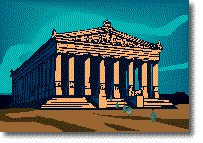

por Miriam Fried

El turco lo hablan unos 60 millones de personas en Turquía y los países de alrededor. Pertenece a la familia de lenguas altaica, formada por unas 65 lenguas, entre ellas el turcomano, el mongol y quizás hasta el coreano y el japonés. Hasta 1929, el turco se escribía con el sistema de escritura árabe. Después, ese sistema se reemplazó por el alfabeto latino, con algunas letras especiales para representar ciertos sonidos del turco. Por ejemplo, en este acertijo encontrarás la letra «ç», que representa un sonido parecido al de la «ch» de «chocolate».
Aquí tienes algunas palabras en turco, seguidas de sus traducciones. Míralas con cuidado e intenta responder las preguntas de abajo:
| kilimler | 'tapetes' | deftere | 'al cuaderno' |
| arabalar | 'coches' | masa | 'mesa' |
| kilimde | 'en el tapete' | defterlerde | 'en los cuadernos' |
| deniz | 'océano' | ev | 'casa' |
| adamlara | 'a los hombres' | havuç | 'zanahoria' |
| taraflarda | 'en los lados' | defter | 'cuaderno' |
| okula | 'a la escuela' |
Siguiendo los patrones que ves arriba, traduce al turco las siguientes palabras o frases. Puedes usar una «c» normal para representar la «ç»: